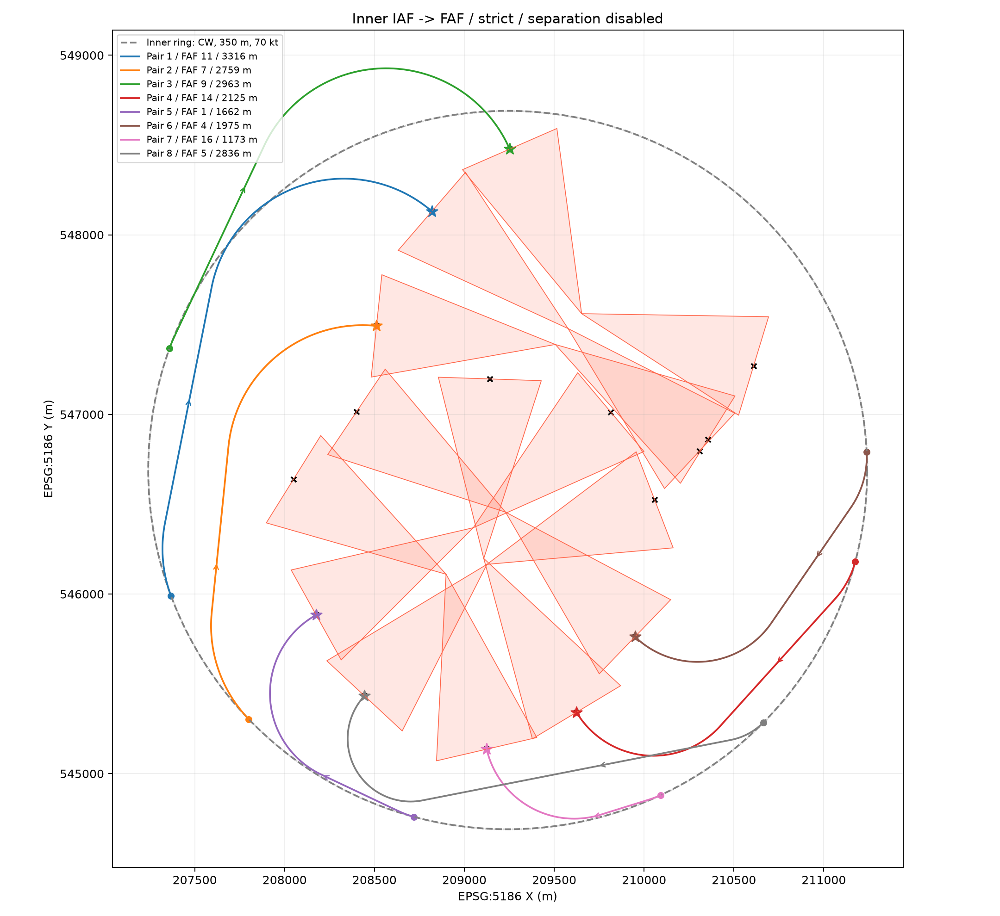
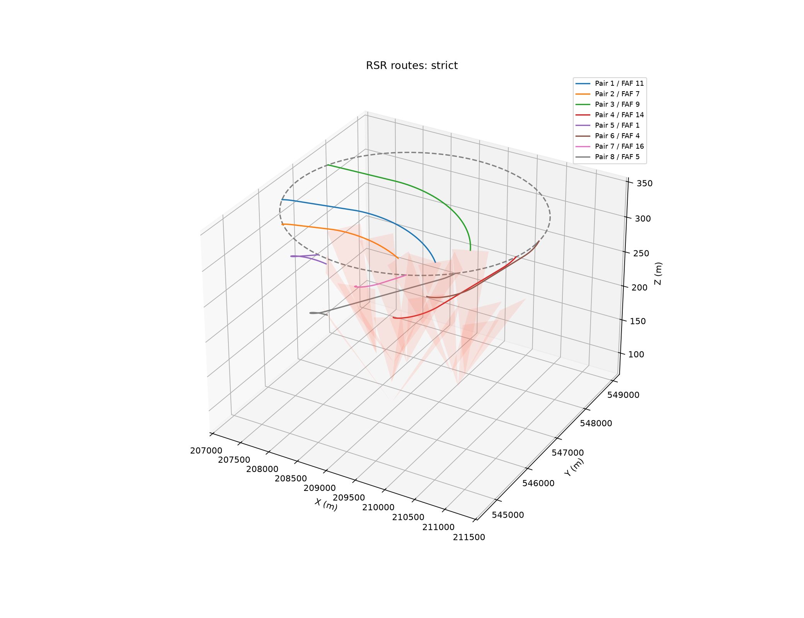
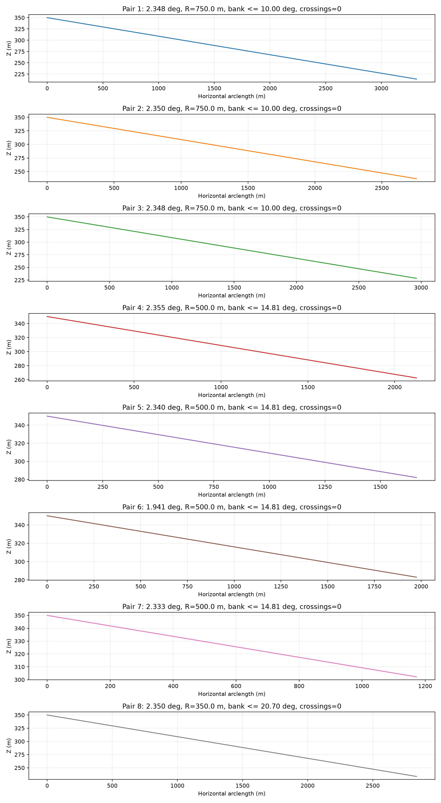

1000 IAF × 16 FAF × 4 반경: 총 64,000개 조합. 내곽 350m, 70→60kt, 시계방향 RSR. FAF 높이는 alt 필드 사용.
수평·수직 분리 조건 활성화: False. 비활성화된 경우 서로 교차하는 항로가 포함될 수 있습니다. 선회반경은 무풍·TAS·협조선회 모델이며 기체별 승인 성능이나 운항 안전성 인증을 뜻하지 않습니다. 건물·지형·기상·롤 전이·출발 시각은 분석 범위에 없습니다. 고도 기준은 입력 자료와 링 높이가 같다고 가정합니다.
링은 IAF 출발 위치와 접선 방향을 정하는 데 사용하며, 링 내부에 항로를 가두는 경계 제약은 적용하지 않았습니다. 따라서 일부 항로는 링 외부로 우회합니다. SHP의 outside_m 필드에 링 밖 구간 길이를 기록했습니다.
하강 제한: 2.36°와 250ft/NM 중 엄격한 값. 뱅크 ≤30°. 최소반경 229.04m. 각 쌍에서 하나의 FAF만 선택합니다. 원본 SHP는 변경하지 않습니다.
IAF→FAF 속도는 고정된 시작·끝 속도 사이에서 3D 경로를 따라 등감속하는 모델로 설정했습니다. 모든 후보에 같은 속도 조건을 적용하므로 별도 속도 선택 최적화는 하지 않습니다. FAF 이후의 −1m/s² 감속과 35kt 역천이는 이번 분석 범위에 포함하지 않습니다.
기본 결과: strict. 엄격 회피 8/8쌍, 관통 페널티 적용 8/8쌍.
| pair | faf_id | iaf_id | radius_m | length_m | slope_deg | bank_deg | cross_n | overlap_m |
|---|---|---|---|---|---|---|---|---|
| 1 | 11 | 444 | 750.000 | 3316.092 | 2.348 | 9.999 | 0 | 0.000 |
| 2 | 7 | 379 | 750.000 | 2758.993 | 2.350 | 9.999 | 0 | 0.000 |
| 3 | 9 | 556 | 750.000 | 2963.279 | 2.348 | 9.999 | 0 | 0.000 |
| 4 | 14 | 42 | 500.000 | 2125.393 | 2.355 | 14.814 | 0 | 0.000 |
| 5 | 1 | 293 | 500.000 | 1662.500 | 2.340 | 14.814 | 0 | 0.000 |
| 6 | 4 | 993 | 500.000 | 1975.159 | 1.941 | 14.814 | 0 | 0.000 |
| 7 | 16 | 181 | 500.000 | 1172.658 | 2.333 | 14.814 | 0 | 0.000 |
| 8 | 5 | 125 | 350.000 | 2836.342 | 2.350 | 20.698 | 0 | 0.000 |
Landing_Area 회피와 노드 분산을 무시하고 하강·뱅크 조건만 충족하는 쌍별 최단 항로 합: 18.410km. 엄격 회피 선정 합 18.810km, 관통 페널티 선정 합 18.810km. 연결된 쌍 수가 같을 때 이 값을 비교해 회피로 늘어난 길이를 판단할 수 있습니다.
관통은 Polygon XY 내부와 겹치는 선 길이로 측정하며 끝점 단독 접촉은 허용합니다. 원호는 최대 0.02m 현 오차의 폴리라인으로 근사하며, 관통·높이 차는 저장한 폴리라인 기준으로 검사합니다. 모든 16개 Landing_Area를 회피 대상으로 사용합니다(미선택 반대편 FAF의 영역도 포함). 페널티는 관통 영역 수, 중첩 길이, 표면과의 최소 절대 높이 차, 항로 길이, 뱅크각, 선정 IAF 사이의 근접성으로 구성됩니다. 높이 차가 클수록 관통 페널티가 감소합니다.
모든 개별 조합을 평가한 뒤 다중 시작 좌표하강법으로 조합을 선정했습니다. 설정한 반경과 1000개 점에 대한 탐색이며 연속 공간 또는 전체 조합의 전역 최적성은 증명하지 않았습니다. strict와 penalized 결과를 모두 제공하며, 비효율 판단에 의한 자동 완화는 하지 않습니다.



python -B 수정본_20261103/코드/optimization_path.py # 별도 결과 폴더에 분리 조건을 켜는 예시(기본 분석에는 적용 안 함) python -B 수정본_20261103/코드/optimization_path.py --enable-separation --horizontal-sep 100 --vertical-sep 70 --output 수정본_20261103/결과물/separation_test
분리 옵션은 두 항로의 임의 위치 쌍에서 수평·수직이 동시에 지정값 미만이면 배제하는 보수적 공간 회랑 검사입니다. Outer→IF와 Inner Ring의 이격 검사는 이번 범위에 없으며 해당 항로 추가 시 따로 구현해야 합니다.